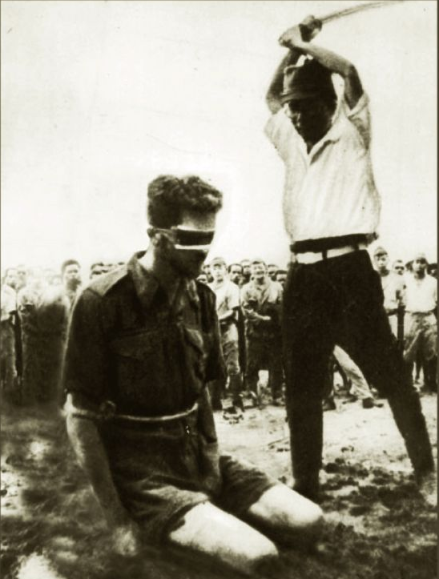
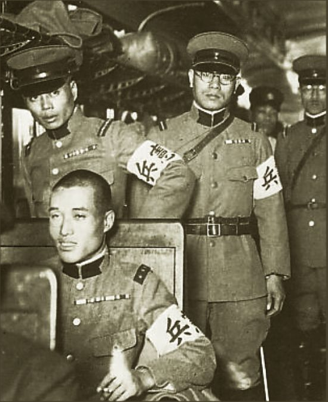
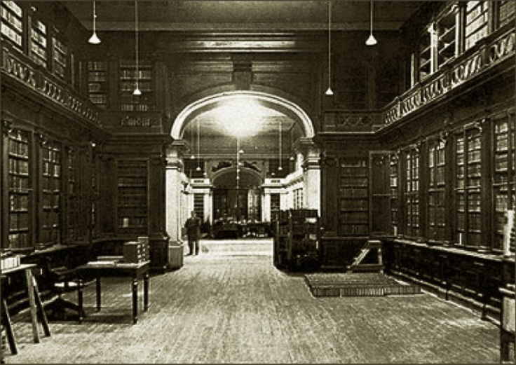
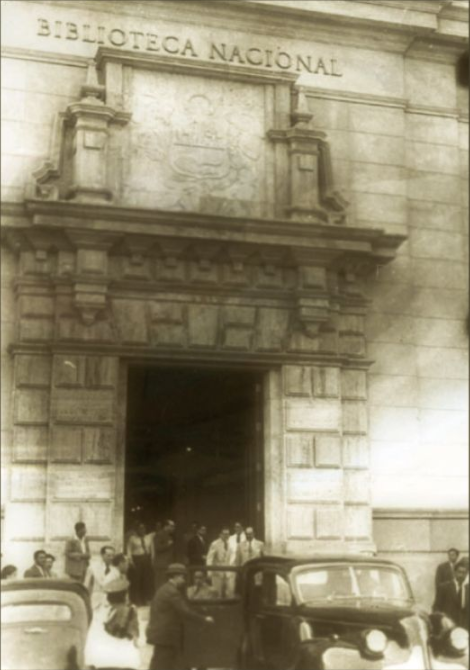
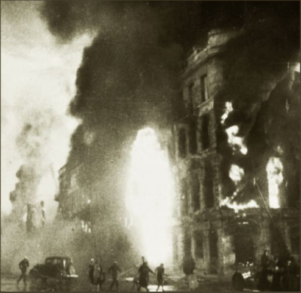

Mueren 30 000 civiles en masacre de Changjiao
Un cruel hecho sucedió en Changjiao, un pueblo del país de china, según los infomes el hecho sucedió el 9 de mayo cuando el Ejército imperial Japonés atacó en contra de la pobalación civil de china en la ciudad de Changjiao (provincia de Hunan) donde más de 30 000 hombres, mujeres y niños fueron asesinados y violados. Se presume que la masacre fue ordenaad por el general japonés Shunroku Hata y que recibe órdenes y es controlado por el cuartel general imperial o Daihonei y por el ministerio de Guerra de Japón.
Biblioteca nacional al fin será renovada
Incendio consumió cientos de libros viejos e inútiles
En la madrugada del lunes 10 en el local central de la biblioteca Nacional de Perú, ubicado en la An. Abancay cuadra 4, un verdadero infierno se desató en el interior de dicho establecimiento por razones aún desconocidas, fueron muchos los bomberos que realizaron enodados esfuerzos por apagar las voraces e implacables lenguas de fuego que arrasaban con todo, la policía trataba de dispersar a los transeúntes que estaban por la zona y contemplaban el espectáuculo, algunos de eellos con la esperanza de que este sea el comienzo de una nueva era, donde la supuesta información del pueblo sea realmente accesible a todos y no solo a algunos privilegiados que lograban obtenerla, traficando y lucrando con ella para llenar sus bolsillos con la historia de todos.
Aunque el valor histórico sea muy grande, el destino quizá la mano de algún patriota buscando igualdad hizoque el fuego le abra campo a la justicia y a la modernidad.
El director de la biblioteca Carlos A. Romero Ramírez inspeccionó el área siniestrada y declaró que se efctuará una exhaustiva investigación para conocer las causas del siniestro.
Cientos de donaciones llegarán gracias al incendio
A solo horas del siniestro buenas noticias empiezan a brillar, decenas de países han anunciado su pronta ayuda para la reconstrucción de la nueva biblioteca nacional, se espera que miles de libros lleguen en los próximos meses para enriquecer y modernizar nuestra conformista cultura en la que estábamos atrapados.
Soviéticos expulsan de Stalingrado a alemanes
Zona petrolera ahora está a salvo de los alemanes